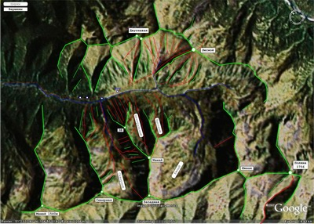

|
|
|
Карта-схема Мамая Катального 
Зеленые линии - хребты, гребни. Синии линии - ручьи.
Апрель 2007. Белокрылов А.Ю. Слюдянка. |
Скачать карту в формате Visio 2003 в формате JPG Для дальнейшей разработки карты требуются: 1. GPS-координаты всяких интересных, ключевых мест. 2. Исторические названия кулуаров, склонов, цирков, данные по их протяженности и крутизне. 3.Конструктивная критика, предложения и указания на неточности. Пишите в Гостевую книгу или в ФОРУМ
|